A game-winning run is a run that puts one team in the lead.
Before looking at some examples, it is worth noting that at the exact moment when one team draws level, it is as if a new game had started for the purposes of determining the game-winning run.
The game-winning run is also the run that identifies the losing pitcher of a game.
Example 48: Game won by the home team by 5 to 4. It can be seen from the box score that the home team retained the advantage from the first inning.
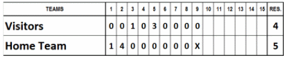
The game-winning run is therefore the first run scored in the first inning.
Example 49: Game won 6-5 by the visiting team. An analysis of the scoring reveals that the fifth inning ended with both teams level (3 all). In the first half of the next inning, the visitors scored the first run and drew ahead (4 to 3), increasing their lead with two more runs (6 to 3), while their opponents only managed to close the gap by scoring the final two runs of the inning.
The game-winning run therefore is the first of the three runs scored by the visiting team in the sixth inning.
Example 50: Game won by the visiting team 9 to 8. The visitors ended their first turn at bat with nine runs. Despite scoring one run in each of the succeeding innings, the home team was unable to catch up and lost the match.
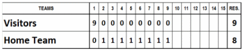
The game-winning run is the one that put the visiting team in the lead,which in this case was the first run of the game.
Example 51: Game won 10-9 by the home team. At the end of the first half of the sixth inning the score stood at 8 to 6 for the visitors. The crucial turning point came in the second half of the same inning, when the home team scored four runs, putting them in the lead (10 to 8), a lead they kept until the end of the match.

The game-winning run is one of the four scored in the sixth inning by the winning team. So, with the first run the home team began to close in (7 to 8); with the second they drew level (8 all); with the third they pulled ahead (9 to 8) and with the last one they put even more distance between them (10 to 8). The game-winning run was therefore the third of these.
Example 52: Game won by the home team, 11 to 9. At the end of the seventh inning the score stood at 4 to 6 for the home team. The visitors, however, scored three runs in the next inning and pulled into the lead (7 to 6). If the game had ended with this result the game-winning run would be the last of these three, i.e. the seventh run. However, the team second to bat ended the inning having scored another five runs (7 to 11), making it impossible for their opponents to catch up. Looking at the progress of the score in the eighth inning, it becomes clear that the home team equalized with the first of the five runs (7 all); the second put them in the lead (8 to 7); and the next three widened the gap. Their opponents succeeded in scoring only two runs, putting the final score at 9 to 11 against them.
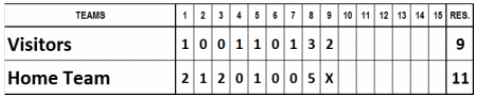
The game-winning run is therefore the second run scored by the home team in the eighth inning.
Example 53: Game won by the visiting team by 12 to 11. If we look at the interim scores at the end of each inning, it becomes clear how a game winning run can vary depending on the runs scored by the teams and the ups and downs of the score line.
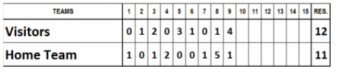
First inning (0-1): The first game-winning run is the one that puts the home team in the lead.
Second inning (1-1): The previous game-winning run is cancelled when the visiting team draws level.
Third inning (3-2): The visiting team scores the first run of the inning and pulls ahead (2-1). They then increase their lead with a second run (3-1). Their opponents score another run (3-2). The game-winning run is therefore the run that put the visitors 2-1 ahead.
Fourth inning (3-4): With the visiting team’s time at bat yielding no runs, the home team then scores two runs. The first brings them level (3-3) and the second puts them in the lead (3-4). The latter run is therefore the new game-winning run.
Fifth inning (6-4): The visiting team scores three runs, the second putting them once again in the lead. The new game-winning run is the second of this inning.
Sixth inning (7-4): The visiting team scores one run and the home team none.
Seventh inning (7-5): Just as they were about to lose, the home team scores. No change in the game-winning run from the fifth and sixth innings.
Eighth inning (8-10): The visiting team scores a run, pulling out their lead (8-5). The home team reacts by scoring five runs, overturning the interim score. Although the third run brought them level (8-8), the fourth took them into the lead and this is therefore the new game-winning run.
Ninth inning (12-11): The visitors draw level by scoring two runs (10- 10), going into the lead with the third and cementing their lead with the fourth. During the home team’s turn at bat they skillfully manage the advantage they gained with the third run and allow only one runner to score.
The game-winning run is therefore the third run of the ninth inning scored by the visiting team.
Now that we know how to find the game-winning run, it is possible to determine the statistics to be awarded to the pitchers, when a team uses more than one pitcher; you are advised to proceed as follows:
Winning team: determine who is the WINNER and if a SAVE is applicable.
Losing team: determine which pitcher was responsible for the run that gives the winning team a lead that the winning team does not relinquish (this is the game winning run).
IMPORTANT: Each pitcher can only be credited with just one statistic, even if he came out to pitch several times in the same game.
In the following examples the colors in the tables are intended solely to emphasize the inning pitched by each pitcher and must not be used on the official score sheet.
Example 54: In a baseball game won by the home team 4 to 1, with no pitcher substitutions by either team, the home team pitcher will be the winning pitcher and the visiting team pitcher will be the losing pitcher.
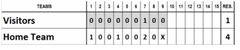
Example 55: In a baseball game won by the visiting team 8 to 7, with the scores as shown in the table, the starting pitcher of the visiting team is replaced by a relief pitcher at the beginning of the second half of the sixth inning.

The pitchers are given the following statistics:
Winner: the starting pitcher of the visiting team as he pitched 5 innings, his team was in the lead when he was replaced, and remained in the lead until the end.
Save: the relief pitcher of the visiting team as he ended the game, kept his team in the lead, and pitched four innings.
Loser: the only pitcher of the home team is the losing pitcher.
Example 56: In a baseball game won by the home team 16 to 7, with the scores as shown in the table, the home team’s starting pitcher is replaced by a relief pitcher at the beginning of the sixth inning.
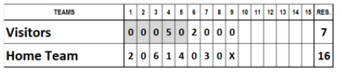
The pitchers are given the following statistics:
Winner: the starting pitcher of the visiting team as he pitched 5 innings, his team was in the lead when he was replaced, and remained in the lead until the end.
Save: the relief pitcher of the home team as he ended the game, kept his team in the lead, and pitched four innings.
Loser: the only pitcher of the visiting team is the losing pitcher.
Example 57: In a baseball game won by the home team 5 to 2, with the scores as shown in the table, the home team’s starting pitcher was replaced by a relief pitcher at the beginning of the sixth inning.

The pitchers are given the following statistics:
Winner: the starting pitcher of the home team as he pitched five innings, his team was in the lead when he was replaced and remained in the lead until the end
Save: the relief pitcher of the home team as he ended the game, kept his team in the lead, and pitched four innings.
Loser: the only pitcher of the visiting team is the losing pitcher.
Example 58: In a baseball game won by the home team 6 to 5, with the scores as shown in the table, the home team’s pitcher was replaced by a relief pitcher at the beginning of the sixth inning.

The pitchers are given the following statistics:
Winner: the relief pitcher of the home team as he ended the game, and with him on the mound his team took the lead and went on to win the game.
Loser: the only pitcher of the visiting team is the losing pitcher.
In this case there is no save to award as the relief pitcher is the last one to pitch and has already been determined as the winning pitcher.
Example 59: In a baseball game won by the visiting team 5 to 4, with the scores as shown in the table, the home team’s starting pitcher was replaced by a relief pitcher at the beginning of the fourth inning.

The pitchers are given the following statistics:
Winner: the only pitcher of the visiting team is the winning pitcher.
Loser: the game-winning run is the second run of the visitors in the 7th inning. The relief pitcher of the home team was pitching when the opposing team took the lead and held it and is the losing pitcher.
Example 60: In a baseball game won by the visiting team 15 to 5, with the scores as shown in the table, the home team’s starting pitcher was replaced by a relief pitcher at the beginning of the fifth inning.

The pitchers are given the following statistics:
Winner: the only pitcher of the visiting team is the winning pitcher.
Loser: the game-winning run is the first run of the visitors in the first inning. The starting pitcher of the home team is the losing pitcher as his team was behind when he was replaced and remained behind for the rest of the match.
Example 61: In a baseball game where the run difference rule applies, won by the home team 14 to 1, with the scores as shown in the table, the home team’s starting pitcher was replaced by a relief pitcher at the beginning of the sixth inning.

The pitchers are given the following statistics:
Winner: the starting pitcher of the home team as he pitched five innings, his team was in the lead when he was replaced and remained in the lead until the end.
Loser: the only pitcher of the visiting team is the losing pitcher.
In this case there is no save as the relief pitcher only pitched two innings when his team already had a 12 run advantage.
Example 62: In a baseball game won by the visiting team 12 to 2, with the scores as shown in the table, the starting pitcher of the home team was replaced by a relief pitcher at the beginning of the third inning. The starting pitcher of the visiting team was replaced by a relief pitcher at the beginning of the second half of the fourth inning.
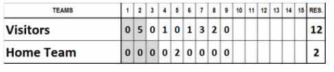
The pitchers are given the following statistics:
Winner: the relief pitcher of the visiting team as it is not possible to credit the starting pitcher with the victory because he was replaced before he had pitched five innings.
Loser: the game-winning run is the first run of the visitors in the second inning. The starting pitcher of the home team is the losing pitcher as his team was behind when he was replaced and remained behind for the rest of the match.
Example 63: In a baseball game won by the visiting team 16 to 7, with the scores as shown in the table, the starting pitchers of both teams were replaced by relief pitchers at the beginning of the third inning.
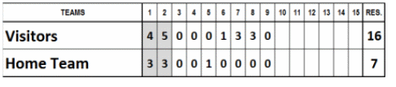
The pitchers are given the following statistics:
Winner: the relief pitcher of the visiting team. As the starting pitcher only pitched two innings, even though his team was in the lead when he was replaced, the victory is credited to the relief pitcher.
Loser: the game-winning run is the first run of the visitors in the first inning. The starting pitcher of the home team is the losing pitcher as he was replaced while his team was losing and was unable subsequently to draw level or to pull ahead.
Example 64: In a baseball game won by the home team 9 to 1, with the scores as shown in the table, the starting pitcher of the visiting team was replaced by a relief pitcher at the start of the second half of the third inning. The starting pitcher of the home team was replaced by a relief pitcher at the beginning of the sixth inning.

The pitchers are given the following statistics:
Winner: the starting pitcher of the home team as he pitched five innings and when he was replaced his team was in the lead, and remained so until the end.
Save: the relief pitcher of the home team because he ended the game, kept his team in the lead, and pitched four innings.
Loser: the game-winning run is the second run of the home team in the first inning. The starting pitcher of the visiting team is therefore the losing pitcher; his team was losing when he was replaced and was not subsequently able to draw even or to pull ahead.
Example 65: In a baseball game won by the visiting team 5 to 4, with the scores as shown in the table, the starting pitchers of both teams were replaced by relief pitchers at the beginning of the seventh inning.

The pitchers are given the following statistics:
Winner: the starting pitcher of the visiting team. He pitched six innings, and when he was replaced his team was in the lead, and remained so until the end.
Save: the relief pitcher of the visiting team. He ended the game, kept his team in the lead, and pitched three innings.
Loser: the game-winning run is the run of the visiting team in the second inning. The starting pitcher of the home team is therefore the losing pitcher. His team was losing when he was replaced and was not subsequently able to draw even or pull ahead).
Example 66: In a game won by the visiting team 13 to 9, with the scores as shown in the table, the starting pitcher of the home team was replaced by a relief pitcher at the beginning of the fourth inning, who was in turn replaced by another pitcher at the beginning of the fifth inning.
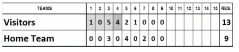
The pitchers are given the following statistics:
Winner: the visiting team’s only pitcher is the winning pitcher.
Loser: the game-winning run is the run of the visiting team in the first inning. The starting pitcher of the home team is the losing pitcher. His team was losing when he was replaced, and was not subsequently able to draw even or pull ahead.
Example 67: In a baseball game won by the visiting team 10 to 9, with the scores as shown in the table, the starting pitcher of the home team was replaced by a relief pitcher at the beginning of the third inning. He in turn was replaced at the beginning of the sixth inning. The starting pitcher of the visiting team was replaced by a relief pitcher at the beginning of the second half of the sixth inning.
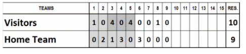
The pitchers are given the following statistics:
Winner: the relief pitcher of the visiting team. He was on the mound when his team scored the run that guaranteed them victory.
Loser: the game-winning run is the run of the visiting team scored in the eighth inning. The last pitcher of the home team is therefore the losing pitcher as he was on the mound when the run that signaled defeat was scored.
Example 68: In a baseball game won by the home team 10 to 8, with the scores shown in the table, the starting pitcher was replaced at bat by a pinch hitter in the bottom of the 7th inning. His team scored 4 runs to take the lead in the game. In the top of the 8th inning a new pitcher enters the mound.
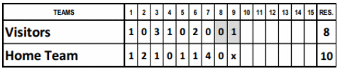
The pitchers are given the following statistics:
Winner: the starting pitcher of the home team. He was technically still on the mound when his team scored the run that guaranteed them victory, although he was already replaced at bat.
Loser: the only pitcher of the visiting team is the losing pitcher.